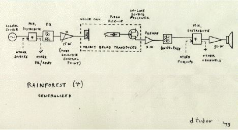

Sound Art Fall 2016
Project 3 -- Rainforesting -- Crit/Performance: 11/3
So far in this class we have experienced a number of different audio interpretations of a 'rain forest'. First we had Francisco Lopez' version, a recording of "La Selva", with which he hopes to direct our attention away from "La Selva", the nature preserve, towards an acoustic reality, an experience of sound.
Francisco Lopez, "La Selva" on Youtube
I also showed you my web site response to Lopez, which uses sound effects, recorded by other people. My piece is a response not only to my distast for Lopez' purity, but also to the social characterizations of sonic experience. Why do we call these recordings 'sound effects'? Why aren't they just, 'sounds'? Is a cartoon rainforest any less 'real' than a 'real' rainforest? How does interaction change a sound experience?
Our next approach to a 'rainforest' is going to be a collaborative exercise that we create together, in space and time, with sound and objects. We will take our inspiration first and foremost from David Tudor’s ‘Rainforest’, as discussed in class, but we will extend this piece radically using any tools and techniques that we deem necessary or helpful.
As discussed in class, Tudor's rainforest compares our contemporary electronic experience to that of a rainforest, in all of its complexity, depth and chaos. In his piece he creates a feedback loop that links and expands objects and their sounds, using electronic gear: amplifiers, transucers, speakers, a mixing console.
You may take your inspiration directly from Tudor and create an installation which mimics his, or you may take this piece in a more performative direction, singing, reading texts, playing instruments, playing electronics, filling the space with acoustic life that resonates for you with this notion of an electronic rainforest.
We are also using this project to familiarize ourselves with the experience and requirements of installing sound in sapce, so I do ask that you include some sort of playback system (device/amplifier/speaker) in your plans. Your playback device might be a phone, cd player etc.... or it might be a laptop. Let's code something up in SuperCollider or Sonic Pi and introduce another chaotic system into the system! It would make sense that the audio material you project through this system should be related to theme of a 'rainforest', either by working with or against the theme in some way. (and, speaking or projecting...images/video projected can also be a part of this piece!)Talk to me if this is something you're interested in so we can accomodate you.
I also encourage you to try using a motor, your new contact mics, transducers (I can supply some) and other tools that we've been learning about in class.
This chaotic environment we create will represent our first steps as we try to break free from this notion of sound as time, and project sound into space. Let's have fun with it! Ask me if you have any questions!